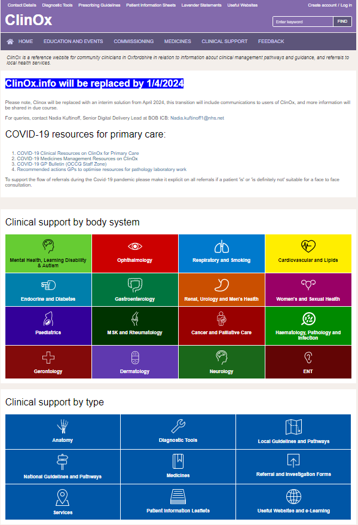
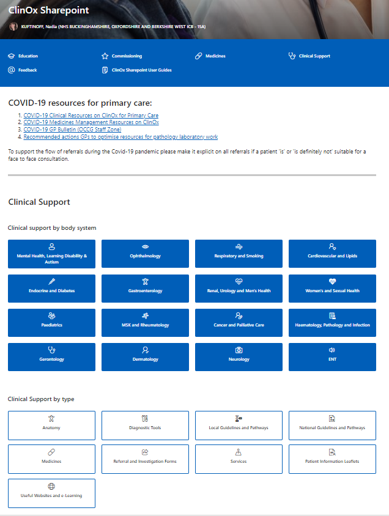
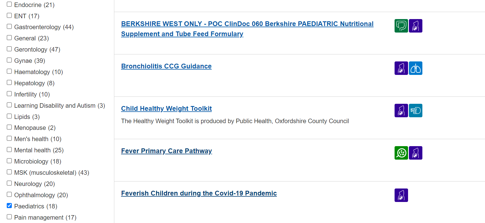
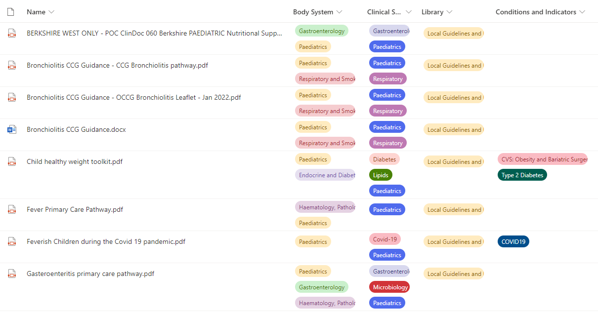

Where do you start when you have a problem, but no money, time or staff?

Digital transformation is the game
I’ve just about worked in the NHS long enough to remember the days when a bit of money occasionally appeared for digital transformation. You remember the thrill of hearing someone had some cash in their budget for something digital I’m sure - it’s like Christmas morning and you’ve found the biggest present under the tree has your name on it. I recall attending project boards in CCG offices with clinicians redesigning pathways, excited to fix a problem, “this could spread across the STP!”. I’ve sat in MDTs, where people were elated to hear there was tech out there to improve their ways of working and they couldn’t wait to embrace something new. I loved pilots, everything about them – from the earnest suppliers keen to develop their products into an optimal solution, to the host sites eager to see what benefit a new gadget or software could bring. And the evaluations! I was fascinated to see the impact something digital could have and was immensely proud to be a part of clinical and workforce transformation.
Financial constraints have always existed – half of one of my residentials for the Digital Health Leadership Programme was dedicated to roleplaying, asking an Executive Board for money (sounds tame but was genuinely one of the most intense activities I’ve ever been a part of, we scoffed when Cohort One warned us about it but there were plenty of helpings of humble pie that day, let me tell you). One unintended benefit of this limitation, in my opinion, is giving us the opportunity to do some creative problem-solving. But peril lies in wait just around the corner, friend – there are time constraints as well, and human resource ones – let’s throw in some tricky stakeholder engagement to the mix as well. Now it’s getting interesting.
My ICB had adopted SharePoint as part of another project, and I was nothing short of astounded at what my teammates had managed to achieve. This wasn’t your back of Teams document library, oh no. This was a living, breathing intranet site which, not long after its launch, teams across the ICB adopted at pace. They designed their own pages, added their own content, asked for more pages, tiptoed with curiosity into the art of the possible and pretty soon didn’t really need the Digital Delivery team’s help at all – the dream of BAU realised. Bliss!
Some Practices had their own SharePoint sites set up for them as well, which was admittedly a tad more clunky – perhaps as you might expect given how we were trying to recreate another solution. There was a lot of engagement, a lot of co-design and a lot of moments of despair, partially because the version of SharePoint we use in the NHS environment isn’t the all singing, all dancing SharePoint you read about on the Microsoft support forums rendering the guidance utterly redundant and throwing you out in the cold, but believe me my team wrangled with it tirelessly until it was as fit for purpose as could be. Now I’d had next to nothing to do with this project initially, but I eventually barge in with a problem to solve and some sparky ideas on how to solve it.
Let’s dive right in.
So there’s this website. Picture it if you will. It looks all right, nothing fancy, but you can navigate around it easily enough. There’s a search bar. Nothing out of the ordinary. What makes it precious, however, is its content – clinical advice and guidance for medicines, protocols, local pathways, and referral information. Oodles of really helpful documents. My understanding was that this was used predominantly in general practice, and a bit of secondary care, but by and large a historic tool developed by the CCG.
Your mission, should you choose to accept it: the contract is going to run out, there’s absolutely no money to replace it but everyone wants to keep it.
What could go wrong?
Digital get drafted in because, well, it’s a website, and websites live in laptops on the internet. It was the first project I was assigned to manage at the ICB and I was excited to conduct some user research in the early Spring, cobble together a request for information from suppliers and present findings back to stakeholders to take things from there.
Lovely stuff, what could go wrong? I’ll tell you what, and I cannot emphasise these words enough: nearly everything!
From low user engagement because of devastating timing with OPEL Four status to not being able to determine product ownership to not one single penny being available for procurement, this project had it all. The requirements weren’t anything astronomically complicated, but it didn’t matter – there was no money to do anything. Members of different teams tried to figure it out. Leads of directorates tried to figure it out. Risks were added to the organisation risk register, papers were written for the Executive team. Meetings were held with current suppliers, people who used different suppliers, new requirements arose, new stakeholders appeared, the scope crept and expanded and exploded. Domains expired, complexities arose, presentations to Boards were made, everything I could think of doing, I did – but inevitably I was met with dead end after dead end. It was miserable.
Time was ticking and I was no closer to solving the problem than I was on day one. With the contract set to expire, I made a decision – recreating the website in SharePoint, though not perfect, was going to be better than having nothing at all. So I got to work.
Stakeholders
The first port of call was stakeholder engagement. “Good luck,” I was told by someone who introduced me to some key contacts, and she meant it. I set about working on the best presentation of my life, which included designing the SharePoint page to allow for some visualisation of the solution I was proposing. I wrote out my vision, I included timelines, the scope of my plan, the limitations and the benefits, the risks, you name it I did it. I blew the metaphorical doors off the hinges going into those meetings and, slightly agog, everyone gave me a thumbs up to proceed.
Let’s have a look
The fun part commenced immediately – designing the actual SharePoint site. I needed it to be a near identical match to the existing homepage of the website because I wanted it to be instantly recognisable. If you’d used the website before, you’d have no problem navigating the SharePoint site. Fortunately, this was the easiest part of the whole thing. Take a look:

And

Next, some exploration was required in understanding the tricks of a document library within a SharePoint site. This again wasn’t too difficult in terms of the design, as the existing website worked in a similar way making use of tags. Well wouldn’t you know it, you can create columns and tags in SharePoint too. Another win!

And

The document library works a lot like an Excel sheet – you can sort and filter, so the more tags you have, the better the search results. And those search results generate their own URL, so that’s what all the hyperlinks on the homepage take you to. Simple when you know the answer isn’t it! That took me a good couple of days to get the hang of, bloody thing.
I figured out very early on in the migration process that it wasn’t going to be as easy as downloading the files from the existing website and uploading them into the SharePoint. The file names needed some tweaks to them so they were coherent and tags needed to be first created in the SharePoint, then assigned to the corresponding file. There were two ways to do this: badly, or correctly. Through gritted teeth, I set about creating 305 different filtered views to correspond with the pages of the website, migrated 2053 files of which nearly all of them needed something fixed and added to these files 7813 tags. The SharePoint site now worked in exactly the same way as the website.
Lots of other bumps in the road ensued and it took a lot of grit and determination to work through the issues, one by one. These ranged from figuring out guest access into the NHS tenant for approved non-NHS.net users to nearly losing my mind when a straightforward URL redirect didn’t work and resulted in setting up a new server (thank goodness I work with some very clever people who know how to do things like that). Some are still outstanding because they’re bigger challenges that I either can’t do anything about, or I can’t do by myself. Reasonable, you might think, but I’m incredibly hard on myself about this. I feel terrible that people have to wait to get access to documents, or links on other sites don’t take them straight to the file they’re looking for (though I’ve mapped hundreds of them with the help of some code I taught myself, the time-consuming part is updating them). It’s relentless and has often felt like there was no light at the end of the tunnel. I joined the NHS so I could help develop and improve things through technology, and here I was doing the opposite of that. Not enabling, not problem solving, but testing absolutely everyone’s patience.
Feedback
I said that “testing absolutely everyone’s patience” statement one day to my Deputy CIO, who I consider a knowledgeable and compassionate leader who doesn’t deserve the high blood pressure I cause him. “What are you talking about??” he asked me, exasperated. “If it wasn’t for you, this entire thing wouldn’t even exist!” And that, miraculously, reached a part of my mind I’d thrown asunder while caught up in the whirlwind of Sorting The Thing Out and Getting The Thing Done. For all the annoyances of what I’d done, I’d also brought something really valuable into being, and worked my socks off to win hearts and minds along the way. I don’t like to toot my own trumpet so here’s some feedback from some very kind people.
- “I have had positive feedback from your meetings” – Deputy Director
- “I know how much work you’ve been putting into this” – Senior Transformation Manager
- “I know this SharePoint has been a huge nightmare but we are really grateful for what you have been doing to try to sort things out for everyone” – Lead Pharmacist
- “Incredibly useful for my daily practice” – GP Medical Officer, RAF
- “I can only imagine the incredibly HUGE task of what you’re doing! Thanks so much for all your help, really appreciate it” – GP Pharmacy technician
- “Regardless of the issues, I think you should be proud of yourself for creating such a great repository” – Specialist Registrar
So what difference does it make, when one person working in digital health sets their mind to doing something? What impact can an individual have?
I eventually stopped diminishing this project. “It’s only a SharePoint page” I’d say, even when it was never really just that. It was a huge undertaking to ensure that clinicians had the right documents at the right time to support patient care. It was long days for months on end to help open the resource up beyond general practice, beyond community and secondary care, beyond even the footprint of my ICB. It was an opportunity for me to learn and grow and come up with innovative ways of doing things that no one has done before.
Certainly, that is better than nothing.
Join us
If you want to hear more about Nadia’s amazing story, please do register and join us at the Let’s Talk Digital Conference 2024 on the 24th of October. Sign up here.
Nadia Kuftinoff

Nadia is the Senior Digital Delivery Lead in the Buckinghamshire, Oxfordshire & West Berkshire (BOB) Integrated Care Board (ICB). She oversees a portfolio of digital delivery projects in general practice ranging from operational to transformational. She has extensive experience of user-led innovation adoption and evaluation projects. She works closely with the frontline using her subject matter expertise to re-design service delivery and re-imagine what the role of a digital transformation lead looks like. She has an MSc in Digital Health Leadership from Imperial College London.